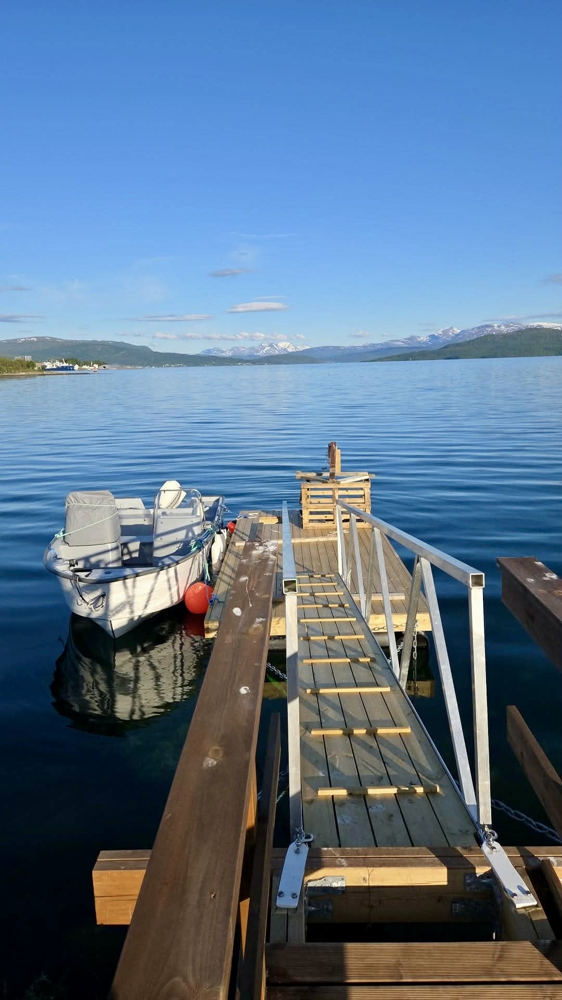
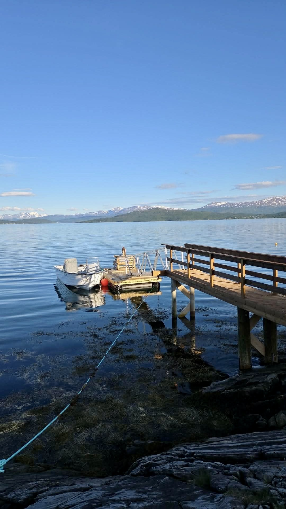
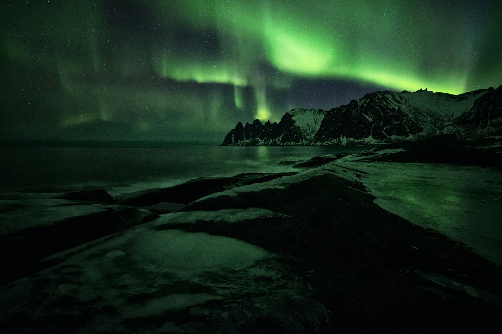
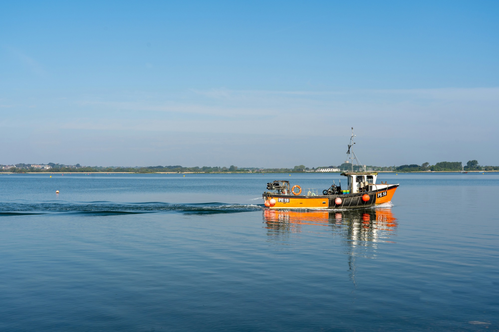
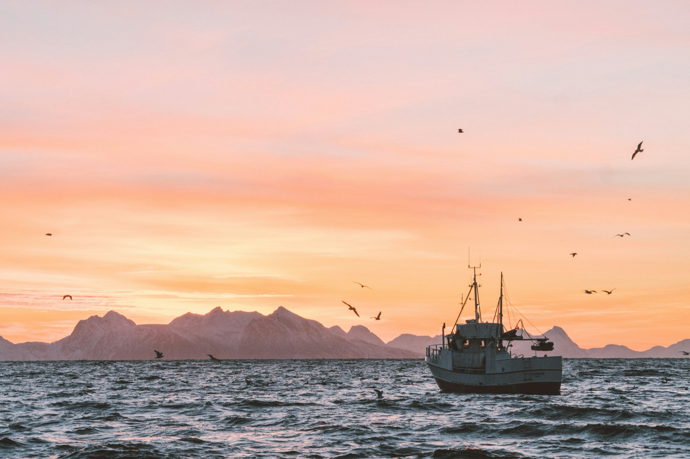

Fishing
Fishing
Eagles & Lines
A flexible summer outing on the inner fjord — cast for cod, saithe and halibut with a fish finder to help, and keep one eye on the sky for sea eagles. Three to six hours, entirely at your pace.

Private boat tours from Finnsnes into the heart of Senja — fjord cruises, fishing adventures, and midnight sun voyages.





Finnsnes is where the mainland meets the island. Cross the Gisund Bridge and you are on Senja — a place of jagged peaks, dark fjords, white-sand beaches and barely a soul. We show you the island from where it was always meant to be seen: the water.
Our 20-foot boat has worked these waters for years. Step aboard and let us take you into Senja's most dramatic corners — whether you're chasing the midnight sun, waiting for the aurora, hauling in your first catch, or simply watching the mountains rise from the sea.
All tours depart from Finnsnes harbour on our 20-foot boat. Private groups only — no strangers, no shared boats.
Fishing
A flexible summer outing on the inner fjord — cast for cod, saithe and halibut with a fish finder to help, and keep one eye on the sky for sea eagles. Three to six hours, entirely at your pace.

CruiseTwo to six hours on the water — dramatic coastline, sea eagles, and Senja's mountains rising vertically from the water. The fjord as only the locals know it.
Seasonal
The sun never sets. A late-evening voyage into the golden Arctic light — Senja's peaks bathed in colours that simply don't exist at any other latitude on earth.
Fill in the form and we'll confirm your booking within 24 hours — including departure time, what to bring, and everything you need to know before you step aboard.

Senja is one of Norway's best-kept secrets — a large island in Troms county where jagged peaks plunge almost vertically into dark fjords, white-sand beaches appear around unexpected corners, and the sea is still cold and clear and utterly wild. Seen from the land, it is spectacular. Seen from the water, it is something else entirely.
We leave Finnsnes harbour and head into the heart of the island. For two to six hours the coastline unfolds — cliff faces that rise straight from the sea, narrow sounds where the mountains funnel the light, quiet bays that no road reaches. Sea eagles are common. Porpoises and seals appear without announcement. Your guide knows where to look.
This is not a sightseeing bus on the water. The pace is yours. We stop when something deserves stopping for, and move on when you're ready.
Above the Arctic Circle, the sun stops setting in late spring. For weeks, it circles the sky day and night — and the light it casts in those small hours is unlike anything else on earth. Warm, flat, golden and enormous, it skims across the peaks of Senja and turns the fjord into something almost impossible to photograph, and impossible to forget.
We depart in the evening, when the mainland has gone quiet and the fjord belongs entirely to us. The cruise takes you into Senja's most open stretches of water — where the mountains rise on all sides and the sky performs overhead. Your guide finds the spots where the light lands best. Hot drinks, silence, and the occasional splash of a porpoise. Time passes differently here.
The fjord between Finnsnes and Senja is one of the calmest and most productive stretches of water in the area. The inner side stays sheltered when the outer coast is rough, which means more days when the conditions are right and the fishing is good. We run a 20-foot boat with a fish finder on board — you can see the fish before you drop the line.
The duration is flexible. Three hours is enough for a solid session. Six hours gives you time to move around, explore more of the fjord, and try different spots. You set the pace. Your guide knows the water and will find where the cod, saithe and haddock are running — and halibut are present in these fjords too, so keep your line deep.
Sea eagles are common in this part of Senja. We keep an eye out as we go, and your guide will slow down when one appears. There are a lot of them. It is not unusual to see three or four on a single outing.
At the end of the trip, there is an option to go ashore at the guide's house on Senja, where he will help you fillet the catch to take home. This is available at extra cost and worth arranging in advance.
All tours depart from Finnsnes harbour. Finnsnes is on the mainland side of the Gisund strait — connected to Senja island by the Gisund Bridge — and is around 2 hours by car from Tromsø. We'll send you exact meeting point details when you confirm your booking.
We use a 20-foot boat — stable, comfortable, and well suited to the fjord between Finnsnes and Senja. There is a covered cabin, seating for the group, and all required safety equipment on board. It is not a luxury yacht, and that is the point.
Yes — every tour is exclusively for your group. No shared boats, no strangers. The vessel, your guide and the entire experience are yours for the duration. Standard tours accommodate groups of up to 6. Larger groups are welcome — contact us for a tailored quote.
It is always colder on the water than on land. Warm base layers, a windproof outer layer, and waterproof trousers are strongly recommended on every trip. In winter, dress as warmly as you would for a long walk in freezing temperatures — then add a layer. Deck shoes or boots with grip are ideal. We'll send a full kit list when you confirm.
No experience needed at all. On the Eagles & Lines tour your guide sets you up with a rod and shows you the technique. Most guests have never fished before. The fish finder does the hard work of locating the fish — you do the hauling.
Senja is worth visiting in every season — but they offer very different experiences. Summer (June–August) brings the midnight sun, calm seas, and long golden days. Autumn (September–November) brings dramatic weather, the first northern lights, and rich colours. Winter (December–March) offers the aurora in full force and a raw, quiet Arctic landscape. Spring (April–May) sees the return of light and the first warmth. We run tours from May through September.